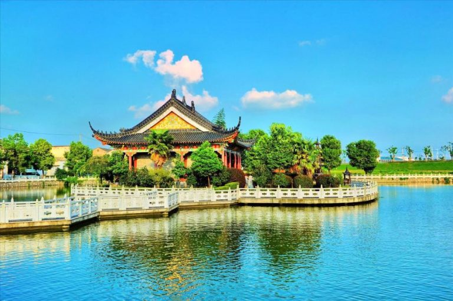
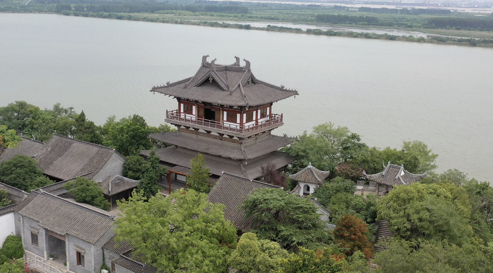
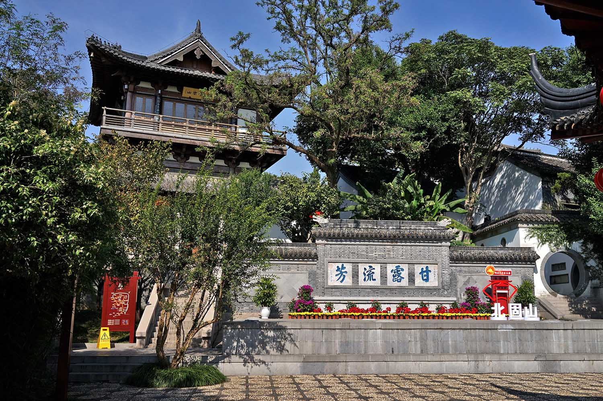
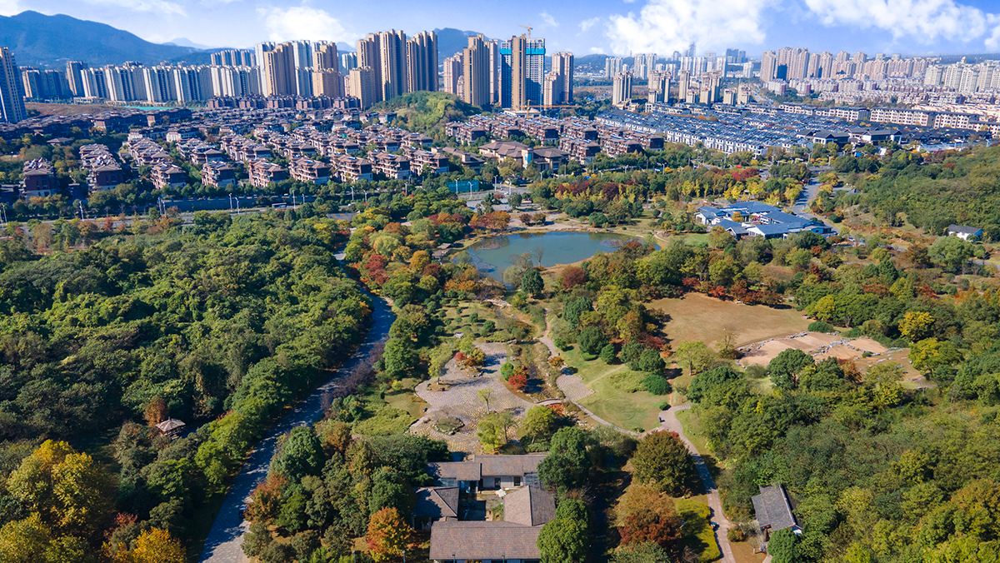

我的家乡

镇江是一座历史文化名城，有着丰厚的文化积淀。这里曾产生过许多令人瞩目的传世佳作，如中国第一部笔记体小说集《世说新语》、中国第一部文学理论巨著《文心雕龙》等。镇江是吴文化的发祥地之一，是泰伯奔吴的第一站，有很多吴国遗存，宜侯夨簋上的铭文是镇江也是苏南地区现今最早的文字记载，宜侯夨簋被称之为吴国第一青铜器。
镇江拥有丰富的传统戏曲资源，其中，扬剧是镇江本地第一大剧种。镇江民间传说故事资源也极其丰富，四大民间传说故事，都跟镇江有着深厚的渊源，其中《白蛇传传说》《董永传说》被列入第四批中国非物质文化遗产名录。
镇江香醋作为 “镇江三怪” 中的第一怪，在镇江传统文化中占有重要地位。镇江恒顺香醋酿制技艺，已被列入第一批国家级非物质文化遗产代表性项目名录。
镇江是中国优秀旅游城市，主要景点有三山风景区、茅山景区、西津渡等。截至 2021 年末，镇江市拥有 a 级景区 30 个，其中 5a 级景区 2 家。
家乡风景展示


